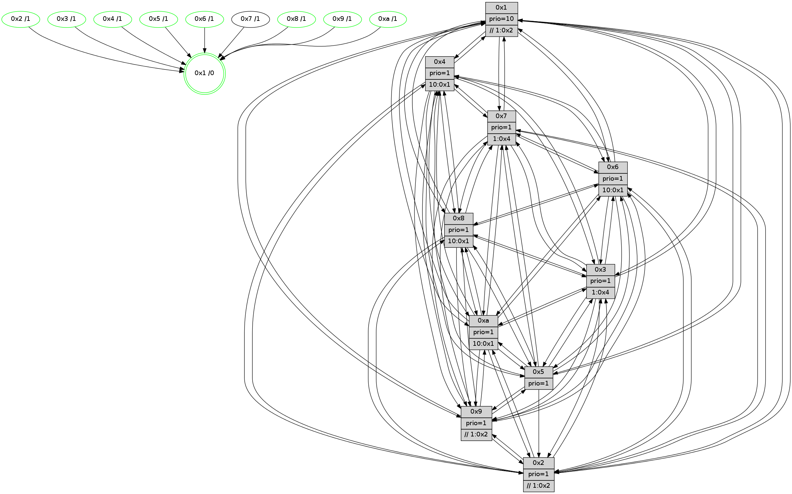

>> << IDX [start] -100 -25 -5 +0 +5 +25 +100 [845.305009127]
 Previous packets
----------------------------------------------------------------------
840.576221 beacon01(faad) #0 coord=01,02,03,04,05,06,07,0a,09,08 cycle=688.0ms assoc
-- color-indic=1 64 69 c3
840.586204 beacon02(faad) #0 coord=01,02,03,04,05,06,07,0a,09,08 cycle=688.0ms assoc 64 fa f2
840.596204 beacon03(faad) #0 coord=01,02,03,04,05,06,07,0a,09,08 cycle=688.0ms assoc 64 80 bf
840.606204 beacon04(faad) #0 coord=01,02,03,04,05,06,07,0a,09,08 cycle=688.0ms assoc 64 f7 55
840.616203 beacon05(faad) #0 coord=01,02,03,04,05,06,07,0a,09,08 cycle=688.0ms assoc 64 8d 18
840.626205 beacon06(faad) #0 coord=01,02,03,04,05,06,07,0a,09,08 cycle=688.0ms assoc 64 03 cf
840.636203 beacon07(faad) #0 coord=01,02,03,04,05,06,07,0a,09,08 cycle=688.0ms assoc 64 79 82
840.646210 beacon0a(faad) #0 coord=01,02,03,04,05,06,07,0a,09,08 cycle=688.0ms assoc 64 08 89
840.656193 beacon09(faad) #0 coord=01,02,03,04,05,06,07,0a,09,08 cycle=688.0ms assoc 64 86 5e
840.666210 beacon08(faad) #0 coord=01,02,03,04,05,06,07,0a,09,08 cycle=688.0ms assoc 64 fc 13
840.677763 [Hello(3): seq=538 sym=1,7,6,2,4,8,9,10,5 sysInfo= stat=1:9,0,2,0/7:1,8,12,5/6:3,4,1,0/2:12,4,15,8/4:7,14,8,5/8:1,10,11,5/9:7,6,1,8/10:14,12,15,7/5:2,0,12,9]
840.680426 [Hello(1): seq=447 sym=4,2,9,5,10,3,8,6,7 sysInfo=coloring-mode-on,ColoringModeRequestCalled stat=4:0,1,5,0/2:13,7,14,9/9:11,12,0,2/5:11,3,7,3/10:9,2,11,9/3:7,2,12,1/8:1,14,12,9/6:6,8,12,8/7:5,4,2,11]
840.683234 [STC(1) #0.98 tree-change,inconsistent-stability,stable,to-color d=0]
840.686804 [Hello(5): seq=538 sym=7,6,4,3,1,9,8,10,2 sysInfo=hasWarning stat=7:6,6,4,6/6:12,15,3,8/4:2,15,7,5/3:5,3,11,8/1:5,2,14,1/9:13,13,1,1/8:1,9,13,7/10:3,0,10,2/2:9,2,4,0]
840.689902 [Hello(6): seq=538 sym=2,3,5,4,7,9,8,10,1 sysInfo= stat=2:6,9,12,7/3:2,1,4,8/5:0,4,5,11/4:2,7,15,0/7:10,10,0,3/9:1,6,4,1/8:1,15,2,8/10:1,8,8,8/1:14,15,10,1]
840.693279 [Color(5) seq=191 @0:0 prio=1]
840.695827 [Color(4) seq=156 @0:0 prio=1 >10.@1,1.@2,1.@3,1.@6]
840.702757 [Hello(2): seq=534 sym=4,7,6,3,9,8,10,1 sysInfo=hasWarning stat=4:11,10,13,4/7:8,5,5,7/6:8,2,0,6/3:1,10,12,4/9:2,12,15,1/8:4,13,12,7/10:14,3,14,7/1:3,15,10,1]
840.707704 [Color(2) seq=183 @0:0 prio=1 >>1.@2,1.@3,1.@4]
----------------------------------------------------------------------
841.364352 beacon01(faad) #0 coord=01,02,03,04,05,06,07,0a,09,08 cycle=688.0ms assoc
-- color-indic=1 64 d5 c6
841.374335 beacon02(faad) #0 coord=01,02,03,04,05,06,07,0a,09,08 cycle=688.0ms assoc 64 46 f7
841.384334 beacon03(faad) #0 coord=01,02,03,04,05,06,07,0a,09,08 cycle=688.0ms assoc 64 3c ba
841.394335 beacon04(faad) #0 coord=01,02,03,04,05,06,07,0a,09,08 cycle=688.0ms assoc 64 4b 50
841.404335 beacon05(faad) #0 coord=01,02,03,04,05,06,07,0a,09,08 cycle=688.0ms assoc 64 31 1d
841.414334 beacon06(faad) #0 coord=01,02,03,04,05,06,07,0a,09,08 cycle=688.0ms assoc 64 bf ca
841.424335 beacon07(faad) #0 coord=01,02,03,04,05,06,07,0a,09,08 cycle=688.0ms assoc 64 c5 87
841.434339 beacon0a(faad) #0 coord=01,02,03,04,05,06,07,0a,09,08 cycle=688.0ms assoc 64 b4 8c
841.444341 beacon09(faad) #0 coord=01,02,03,04,05,06,07,0a,09,08 cycle=688.0ms assoc 64 3a 5b
841.454342 beacon08(faad) #0 coord=01,02,03,04,05,06,07,0a,09,08 cycle=688.0ms assoc 64 40 16
841.465872 [Hello(4): seq=538 sym=5,7,6,2,3,9,8,10,1 sysInfo= stat=5:9,11,2,9/7:1,11,2,4/6:9,3,0,8/2:10,13,14,8/3:8,12,14,6/9:13,6,3,4/8:11,0,1,10/10:5,14,5,7/1:11,4,14,1]
841.468647 [Color(1) seq=219 @0:0 prio=10 >>1.@2,1.@3,1.@4]
841.470187 [Color(6) seq=181 @0:0 prio=1 >10.@1,1.@2,1.@3,1.@4]
841.472011 [Hello(9): seq=482 sym=2,5,3,4,7,6,8,10,1 sysInfo=hasWarning stat=2:7,0,14,0/5:6,12,14,2/3:5,4,13,10/4:12,13,14,6/7:11,1,7,7/6:7,7,3,6/8:11,1,7,1/10:6,7,3,0/1:5,8,15,1]
841.474963 [Hello(7): seq=538 sym=2,3,5,6,4,8,9,10,1 sysInfo=hasWarning stat=2:1,6,10,10/3:15,5,5,10/5:9,7,8,14/6:12,2,6,4/4:13,15,3,0/8:6,7,1,1/9:4,1,6,10/10:13,14,7,9/1:6,3,14,0]
841.477773 [STC(7)->1 #0.98 tree-change,inconsistent-stability,to-color d=1]
841.479957 [Hello(10): seq=471 sym=6,2,3,8,9,5,7,4,1 sysInfo=hasWarning stat=6:4,11,3,3/2:13,7,14,2/3:5,11,12,7/8:3,7,13,9/9:10,0,4,1/5:13,10,4,11/7:15,0,4,5/4:4,0,10,6/1:11,12,15,1]
841.483885 [STC(9)->1 #0.98 tree-change,inconsistent-stability,stable,to-color d=1]
841.485519 [Color(9) seq=187 @0:0 prio=1 >>1.@2,1.@3,1.@4]
841.488680 [STC(10)->1 #0.98 tree-change,inconsistent-stability,stable,to-color d=1]
841.490303 [Color(10) seq=159 @0:0 prio=1]
841.492244 [STC(3)->1 #0.98 tree-change,inconsistent-stability,stable,to-color d=1]
841.493656 [Hello(8): seq=482 sym=5,2,3,4,7,6,9,10,1 sysInfo=hasWarning stat=5:11,12,5,10/2:7,6,14,2/3:8,10,2,10/4:12,12,0,6/7:14,11,5,9/6:10,11,14,8/9:9,1,2,0/10:8,8,2,0/1:14,14,11,0]
841.498064 [STC(8)->1 #0.98 tree-change,inconsistent-stability,stable,to-color d=1]
841.500014 [Color(8) seq=194 @0:0 prio=1 >10.@1,1.@2,1.@3,1.@4]
841.505502 [Color(3) seq=179 @0:0 prio=1 >1.@4,1.@6,1.@7]
----------------------------------------------------------------------
842.152483 beacon01(faad) #0 coord=01,02,03,04,05,06,07,0a,09,08 cycle=688.0ms assoc
-- color-indic=1 64 11 c8
842.162466 beacon02(faad) #0 coord=01,02,03,04,05,06,07,0a,09,08 cycle=688.0ms assoc 64 82 f9
842.172467 beacon03(faad) #0 coord=01,02,03,04,05,06,07,0a,09,08 cycle=688.0ms assoc 64 f8 b4
842.182465 beacon04(faad) #0 coord=01,02,03,04,05,06,07,0a,09,08 cycle=688.0ms assoc 64 8f 5e
842.192467 beacon05(faad) #0 coord=01,02,03,04,05,06,07,0a,09,08 cycle=688.0ms assoc 64 f5 13
842.202466 beacon06(faad) #0 coord=01,02,03,04,05,06,07,0a,09,08 cycle=688.0ms assoc 64 7b c4
842.212466 beacon07(faad) #0 coord=01,02,03,04,05,06,07,0a,09,08 cycle=688.0ms assoc 64 01 89
842.222471 beacon0a(faad) #0 coord=01,02,03,04,05,06,07,0a,09,08 cycle=688.0ms assoc 64 70 82
842.242471 beacon08(faad) #0 coord=01,02,03,04,05,06,07,0a,09,08 cycle=688.0ms assoc 64 84 18
842.253686 [Hello(6): seq=539 sym=2,3,5,4,7,9,8,10,1 sysInfo= stat=2:7,10,12,7/3:2,2,5,8/5:0,5,5,11/4:3,8,15,0/7:11,10,1,3/9:2,7,5,1/8:2,0,3,8/10:2,9,9,8/1:14,15,10,1]
842.257513 [Hello(1): seq=448 sym=4,2,9,5,10,3,8,6,7 sysInfo=coloring-mode-on,ColoringModeRequestCalled stat=4:1,2,5,0/2:14,8,14,9/9:12,13,1,2/5:12,4,7,3/10:10,3,12,9/3:7,3,13,1/8:2,15,13,9/6:7,9,12,8/7:6,4,3,11]
842.261356 [Hello(2): seq=535 sym=4,7,6,3,9,8,10,1 sysInfo=hasWarning stat=4:12,10,13,4/7:9,5,6,7/6:8,3,0,6/3:2,11,13,4/9:3,13,0,1/8:5,14,13,7/10:15,4,15,7/1:4,0,10,1]
842.264203 [Hello(3): seq=539 sym=1,7,6,2,4,8,9,10,5 sysInfo= stat=1:10,0,3,0/7:1,8,12,5/6:4,4,1,0/2:13,5,15,8/4:8,15,8,5/8:1,10,11,5/9:7,6,1,8/10:14,12,15,7/5:3,1,12,9]
842.267921 [Hello(5): seq=539 sym=7,6,4,3,1,9,8,10,2 sysInfo=hasWarning stat=7:7,6,5,6/6:12,0,3,8/4:3,0,7,5/3:6,4,12,8/1:6,3,14,1/9:14,14,2,1/8:2,10,14,7/10:4,1,11,2/2:10,3,4,0]
842.272012 [Color(5) seq=192 @0:0 prio=1]
842.273296 [Color(2) seq=184 @0:0 prio=1 >>1.@2,1.@3,1.@4]
842.278320 [Color(4) seq=157 @0:0 prio=1 >10.@1,1.@2,1.@3,1.@6]
----------------------------------------------------------------------
842.940615 beacon01(faad) #0 coord=01,02,03,04,05,06,07,0a,09,08 cycle=688.0ms assoc
-- color-indic=1 64 ad cd
842.950599 beacon02(faad) #0 coord=01,02,03,04,05,06,07,0a,09,08 cycle=688.0ms assoc 64 3e fc
842.960597 beacon03(faad) #0 coord=01,02,03,04,05,06,07,0a,09,08 cycle=688.0ms assoc 64 44 b1
842.970598 beacon04(faad) #0 coord=01,02,03,04,05,06,07,0a,09,08 cycle=688.0ms assoc 64 33 5b
842.980599 beacon05(faad) #0 coord=01,02,03,04,05,06,07,0a,09,08 cycle=688.0ms assoc 64 49 16
842.990597 beacon06(faad) #0 coord=01,02,03,04,05,06,07,0a,09,08 cycle=688.0ms assoc 64 c7 c1
843.000600 beacon07(faad) #0 coord=01,02,03,04,05,06,07,0a,09,08 cycle=688.0ms assoc 64 bd 8c
843.010603 beacon0a(faad) #0 coord=01,02,03,04,05,06,07,0a,09,08 cycle=688.0ms assoc 64 cc 87
843.030602 beacon08(faad) #0 coord=01,02,03,04,05,06,07,0a,09,08 cycle=688.0ms assoc 64 38 1d
843.043090 [Hello(4): seq=539 sym=5,7,6,2,3,9,8,10,1 sysInfo= stat=5:9,11,2,9/7:2,11,3,4/6:10,4,0,8/2:10,13,14,8/3:8,13,15,6/9:14,7,4,4/8:12,1,2,10/10:6,15,6,7/1:11,5,14,1]
843.045807 [Color(3) seq=180 @0:0 prio=1 >1.@4,1.@6,1.@7]
843.047466 [Hello(7): seq=539 sym=2,3,5,6,4,8,9,10,1 sysInfo=hasWarning stat=2:2,7,10,10/3:0,6,6,10/5:10,8,8,14/6:13,2,6,4/4:13,0,3,0/8:7,8,2,1/9:4,2,7,10/10:14,15,8,9/1:7,3,14,0]
843.050103 [Hello(8): seq=483 sym=5,2,3,4,7,6,9,10,1 sysInfo=hasWarning stat=5:12,13,5,10/2:8,7,14,2/3:9,11,2,10/4:13,13,0,6/7:14,11,5,9/6:11,11,14,8/9:9,1,2,0/10:8,8,2,0/1:15,15,11,0]
843.053939 [Hello(9): seq=483 sym=2,5,3,4,7,6,8,10,1 sysInfo=hasWarning stat=2:8,1,14,0/5:7,13,14,2/3:6,5,14,10/4:13,14,14,6/7:11,1,7,7/6:8,7,3,6/8:12,2,8,1/10:6,8,4,0/1:6,9,15,1]
843.056907 [Hello(10): seq=472 sym=6,2,3,8,9,5,7,4,1 sysInfo=hasWarning stat=6:5,11,3,3/2:14,8,14,2/3:6,12,13,7/8:4,8,14,9/9:10,0,4,1/5:14,11,4,11/7:15,0,4,5/4:5,1,10,6/1:12,13,15,1]
843.059446 [Color(8) seq=195 @0:0 prio=1 >10.@1,1.@2,1.@3,1.@4]
843.061113 [Color(6) seq=182 @0:0 prio=1 >10.@1,1.@2,1.@3,1.@4]
843.065934 [Color(10) seq=160 @0:0 prio=1 >10.@1,1.@2,1.@3,1.@4]
843.067581 [Color(9) seq=188 @0:0 prio=1 >>1.@2,1.@3,1.@4]
----------------------------------------------------------------------
843.728746 beacon01(faad) #0 coord=01,02,03,04,05,06,07,0a,09,08 cycle=688.0ms assoc
-- color-indic=1 64 39 14
843.738729 beacon02(faad) #0 coord=01,02,03,04,05,06,07,0a,09,08 cycle=688.0ms assoc 64 aa 25
843.748729 beacon03(faad) #0 coord=01,02,03,04,05,06,07,0a,09,08 cycle=688.0ms assoc 64 d0 68
843.758730 beacon04(faad) #0 coord=01,02,03,04,05,06,07,0a,09,08 cycle=688.0ms assoc 64 a7 82
843.768730 beacon05(faad) #0 coord=01,02,03,04,05,06,07,0a,09,08 cycle=688.0ms assoc 64 dd cf
843.778730 beacon06(faad) #0 coord=01,02,03,04,05,06,07,0a,09,08 cycle=688.0ms assoc 64 53 18
843.788730 beacon07(faad) #0 coord=01,02,03,04,05,06,07,0a,09,08 cycle=688.0ms assoc 64 29 55
843.798733 beacon0a(faad) #0 coord=01,02,03,04,05,06,07,0a,09,08 cycle=688.0ms assoc 64 58 5e
843.818736 beacon08(faad) #0 coord=01,02,03,04,05,06,07,0a,09,08 cycle=688.0ms assoc 64 ac c4
843.829671 [Hello(1): seq=449 sym=4,2,9,5,10,3,8,6,7 sysInfo=coloring-mode-on,ColoringModeRequestCalled stat=4:2,3,5,0/2:15,9,14,9/9:12,14,1,2/5:13,5,7,3/10:11,4,12,9/3:8,3,13,1/8:2,0,13,9/6:7,10,12,8/7:6,4,3,11]
843.833931 [Hello(3): seq=540 sym=1,7,6,2,4,8,9,10,5 sysInfo= stat=1:10,1,3,0/7:2,8,12,5/6:4,5,1,0/2:13,6,15,8/4:9,0,8,5/8:2,11,11,5/9:7,7,1,8/10:15,13,15,7/5:4,2,12,9]
843.836878 [Color(4) seq=158 @0:0 prio=1 >10.@1,1.@2,1.@3,1.@6]
843.840005 [Hello(5): seq=540 sym=7,6,4,3,1,9,8,10,2 sysInfo=hasWarning stat=7:8,6,5,6/6:13,1,3,8/4:4,1,7,5/3:6,5,12,8/1:6,3,14,1/9:15,15,2,1/8:3,11,14,7/10:5,2,11,2/2:10,4,4,0]
843.843144 [Hello(6): seq=540 sym=2,3,5,4,7,9,8,10,1 sysInfo= stat=2:8,11,12,7/3:3,2,5,8/5:1,6,5,11/4:4,9,15,0/7:11,10,1,3/9:2,8,5,1/8:2,0,3,8/10:2,10,9,8/1:15,15,10,1]
843.846929 [Color(5) seq=193 @0:0 prio=1]
843.857631 [Hello(2): seq=536 sym=4,7,6,3,9,8,10,1 sysInfo=hasWarning stat=4:13,11,13,4/7:10,5,6,7/6:9,4,0,6/3:2,12,13,4/9:4,14,0,1/8:6,15,13,7/10:0,5,15,7/1:4,0,10,1]
843.860982 [Color(2) seq=185 @0:0 prio=1 >>1.@2,1.@3,1.@4]
----------------------------------------------------------------------
844.516878 beacon01(faad) #0 coord=01,02,03,04,05,06,07,0a,09,08 cycle=688.0ms assoc
-- color-indic=1 64 85 11
844.526862 beacon02(faad) #0 coord=01,02,03,04,05,06,07,0a,09,08 cycle=688.0ms assoc 64 16 20
844.536861 beacon03(faad) #0 coord=01,02,03,04,05,06,07,0a,09,08 cycle=688.0ms assoc 64 6c 6d
844.546861 beacon04(faad) #0 coord=01,02,03,04,05,06,07,0a,09,08 cycle=688.0ms assoc 64 1b 87
844.556861 beacon05(faad) #0 coord=01,02,03,04,05,06,07,0a,09,08 cycle=688.0ms assoc 64 61 ca
844.566861 beacon06(faad) #0 coord=01,02,03,04,05,06,07,0a,09,08 cycle=688.0ms assoc 64 ef 1d
844.576861 beacon07(faad) #0 coord=01,02,03,04,05,06,07,0a,09,08 cycle=688.0ms assoc 64 95 50
844.586865 beacon0a(faad) #0 coord=01,02,03,04,05,06,07,0a,09,08 cycle=688.0ms assoc 64 e4 5b
844.606866 beacon08(faad) #0 coord=01,02,03,04,05,06,07,0a,09,08 cycle=688.0ms assoc 64 10 c1
844.619372 [Hello(4): seq=540 sym=5,7,6,2,3,9,8,10,1 sysInfo= stat=5:10,12,2,9/7:3,11,3,4/6:11,5,0,8/2:11,14,14,8/3:8,14,15,6/9:15,8,4,4/8:13,2,2,10/10:7,0,6,7/1:12,5,14,1]
844.623048 [Hello(10): seq=473 sym=6,2,3,8,9,5,7,4,1 sysInfo=hasWarning stat=6:6,11,3,3/2:15,9,14,2/3:7,12,13,7/8:4,8,14,9/9:10,1,4,1/5:15,12,4,11/7:15,0,4,5/4:6,2,10,6/1:13,13,15,1]
844.625887 [Color(3) seq=181 @0:0 prio=1 >1.@4,1.@6,1.@7]
844.627984 [Hello(8): seq=484 sym=5,2,3,4,7,6,9,10,1 sysInfo=hasWarning stat=5:13,14,5,10/2:9,8,14,2/3:10,11,2,10/4:14,14,0,6/7:14,11,5,9/6:12,12,14,8/9:9,2,2,0/10:8,9,2,0/1:0,15,11,0]
844.632723 [Color(8) seq=196 @0:0 prio=1 >10.@1,1.@2,1.@3,1.@4]
844.634605 [Color(10) seq=161 @0:0 prio=1 >10.@1,1.@2,1.@3,1.@4]
844.638818 [STC(1) #0.99 tree-change,inconsistent-stability,stable,to-color d=0]
844.640774 [Color(1) seq=221 @0:0 prio=10 >>1.@2,1.@3,1.@4]
844.643138 [Hello(9): seq=484 sym=2,5,3,4,7,6,8,10,1 sysInfo=hasWarning stat=2:9,2,14,0/5:8,14,14,2/3:7,5,14,10/4:14,15,14,6/7:11,1,7,7/6:9,7,3,6/8:12,2,8,1/10:6,8,4,0/1:7,9,15,1]
844.646295 [Color(9) seq=189 @0:0 prio=1 >>1.@2,1.@3,1.@4]
844.656677 [Hello(7): seq=540 sym=2,3,5,6,4,8,9,10,1 sysInfo=hasWarning stat=2:3,8,10,10/3:1,6,6,10/5:11,9,8,14/6:14,3,6,4/4:13,1,3,0/8:8,9,2,1/9:4,3,7,10/10:15,0,8,9/1:8,4,14,0]